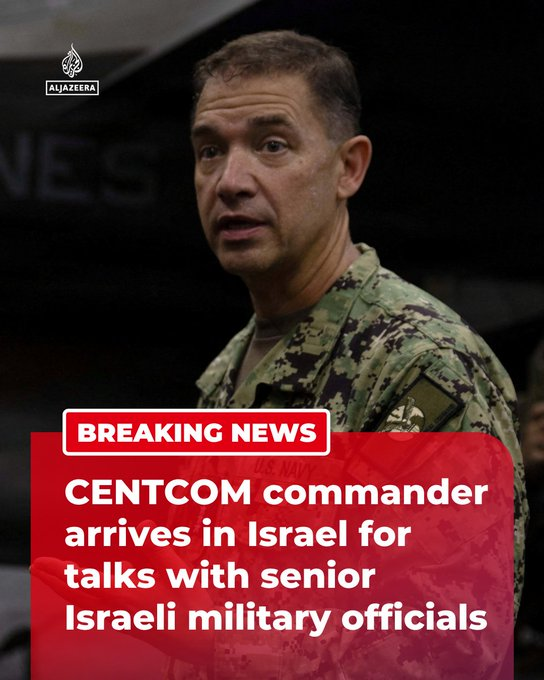

@AJENews
📝 原文: BREAKING: Admiral Brad Cooper, the Commander of the US Central Command (CENTCOM), has arrived in Israel and will meet with Israeli Chief of Staff Eyal Zamir and other senior Israeli military officials, reports Israeli media.More onhttp://Aljazeera.com
🇨🇳 译文: 突发新闻：据以色列媒体报道，美国中央司令部 (CENTCOM) 司令布拉德·库珀海军上将已抵达以色列，并将与以色列参谋长埃亚尔·扎米尔和其他以色列高级军事官员会面。更多信息请访问 http://Aljazeera.com


🕒 2026-08-08T17:27:54+00:00